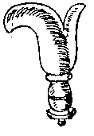

General Instructions
Cutting The Pattern
This is also known as "clicking".
- Lay your leather out on a large surface such as a table top and trace out the pattern
onto it. Remember that ink marks can't be removed except by cutting off the marks, so
marking should be done with a pencil, or a scratching awl. This is likely the purpose of
the small spar on the back of the medieval shoemakers's knives:


To save leather, lay the pattern against the edges of the leather, with the pieces as
close together as possible. Remember, leather was expensive then, and it's not
really cheap today. Be sure to check the leather under the pattem for cuts, thin spots, or
holes before tracing. When the design calls for a left and right pattern, you probably
should use the same pattern, but be certain to turn the pattern over after tracing it on
the leather (unless the right and left foot are grossly different in which case you
definately need to make separate patterns for the left and right feet).
- There are some that feel that drawing and cutting should be done only while sitting,
using a lapboard as a small table. Footwear patterns, as a rule, are small enough that the
entire workspace can be controlled by the small area.
- There are also different schools of thought regarding the appropriate tools that may be
used to cut the leather, a sharp knife versus scissors or shears. Essentially these appear
to boil down to the fact that a sharp knife cuts a single, controllable line, while
scissors and shears tend to cut a line in an offset manner. To my mind, the major
difference is that using a knife is simply less work. Pictures drawn of medieval
shoemakers show them both with knifes and with shears large enough to cut leather.
- Draw the knife point by moving the heel of your hand. Keep your wrist stiff. If you keep
the heel of your hand on the leather as you cut, it will help you keep the leather pinned
to the work surface. Keep the blade straight as you pull the knife. If the angle of your
cutting becomes uncomfortable, stop and pivot the leather or the work surface, not your
wrist.
- If you have to force the knife to cut, it's not sharp enough. Strop it a few times to
sharpen it, otherwise you risk losing control of the cut.
- Thick leathers, such as sole leather, may require two or more passes with the blade, and
even soaking the leather before cutting.
- Cut out the leather. There is some debate regarding cutting leather on a bias or against
the grain, or even using flank or belly leather. It is true that while these things can
work out (and I often cut any which way I can, even on bellies), doing any of these things
can be a bit foolhardy.
Return to Contents or [Next]
Footwear of the Middle Ages - Clicking, by I. Marc Carlson. Copyright 1996, 1999
This page is given for the free exchange of information, provided the author's name is
included in all future revisions, and no money change hands, other than as expressed in
the Copyright Page.